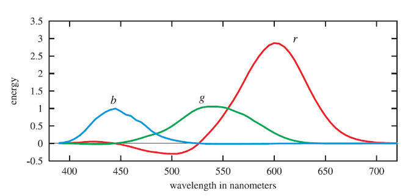
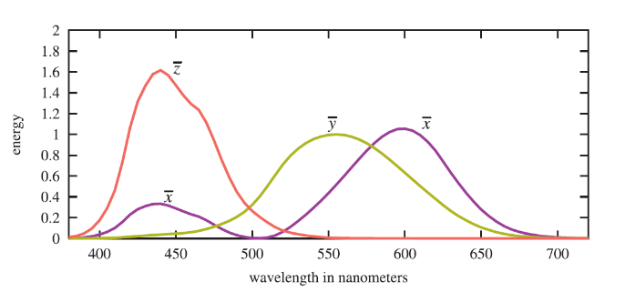
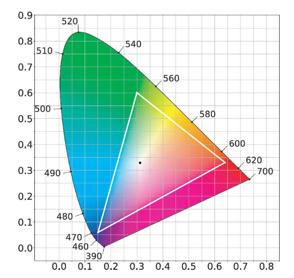

Barwy
Radiometria i fotometria
- Radiometria
- zajmuje się badaniem promieniowania elektromagnetycznego
- czysto fizyczne właściwości
- Fotometria
- pomiary dotyczące interakcji światła z ludzkim systemem wzrokowym
- Konwersja radiometrycznych jednostek do jednostek fotometrycznych
- mnożenie przez krzywą fotometryczną
- reakcja oka na różne długości fali
Kolor
- Nie jest cechą fizycznego obiektu
- Doznania wzrokowe zależą od wielu czynników
- rodzaj źródła światła
- materiały obiektów (ich właściwości, odbicie, załamanie)
- wrażliwość obserwatora na poszczególne długości fali widmowej
- Interpretacji koloru odbywa się w mózgu
- Teoria kolorów obejmuje
- fizykę - propagacja światła
- chemię - oddziaływanie z materią
- neurobiologię itd - percepcja i poznawanie koloru
Światło
- Fala elektromagnetyczna (radiometria)
- Zakres światła widzialnego ok. 380-780 nm
- Z fizycznego punktu widzenia kolor odpowiada długości fali
- Kolory monochromatyczne - pojedyncza długość fali
Budowa oka
- Soczewka - skupienie światła
- ruch przód-tył dzięki mięśniom
- zmiana ogniskowej - pogrubienie / pocienienie
- Siatkówka
- powierzchnia wnętrza oka pokryta komórkami receptorowymi
- Pręciki
- wrażliwe na słabe światło
- przydatne w widzeniu nocnym
- reagują głównie na kolor zielony
- w ciągu dnia raczej nie wpływają na widzenie
- Czopki
- działają w jaśniejszym świetle (słoneczne, sztuczne)
- rodzaje S, M, L
- S - głównie kolor niebieski
- M - głównie kolor zielony
- L - głównie kolory zielony i żółty
- w wyświetlaczach używamy więcej diod zielonych niż pozostałych
SPD
- Spectral Power Distribution
- jak energia jest rozkładana pomiędzy długościami fali
- Większość fal zawiera mieszaninę różnych długości fali
Kolorymetria

- Ludzie są w stanie odróżnić około 10 milionów kolorów
- Kolorymetria bada relację między SPD a postrzeganiem koloru
- Dla danego SPD jesteśmy w stanie wybrać trzy wartości (mieszanie światła) w celu reprezentacji danego bodźca kolorystycznego
- Różne SPD mogą mieć takie same wartości wag - metamery
- Badania empiryczne
- sterowanie składowymi w celu odtworzenia wrażenie kolorystycznego
- Krzywe
- ujemna wartość - dodanie odpowiedniego światła do patcha testowego
- nie da się w ogólności odjąć energii
CIE XYZ

- Poprzednie krzywe nie mogą reprezentować wszystkich widzialnych
kolorów
- ze względu na ujemne wagi
- Trzy abstrakcyjne krzywe
- \(X = \int_{380}^{780} s(\lambda)\bar{x}(\lambda) \ d\lambda\)
- \(Y = \int_{380}^{780} s(\lambda)\bar{y}(\lambda) \ d\lambda\)
- \(Z = \int_{380}^{780} s(\lambda)\bar{z}(\lambda) \ d\lambda\)
- Przestrzeń wykreśla wszystko co jesteśmy w stanie zobaczyć
- Mało wygodne do korzystania
- można podzielić każdą współrzędną przez sumaryczną energię światła
- \(x = \frac{X}{X+Y+Z}\) itd.
- \(x+y+z=1\)
- Można pozbyć się współrzędnej z - można ją wyznaczyć z \(z=1-x-y\)
- \(Y\) - luminancja
Wykres chromatyczności

- Zbiór punktów reprezentujących barwy z widma widzialnego
- Nie ma wartości luminancji na tym wykresie
- różne luminancje i te same xy odwzorowują się na ten sam punkt
- Część krzywoliniowa - barwy widmowe nasycone
- Dolna część - purpury
- W środku kolor biały
- Wszystkie widzialne barwy z dokładnością do luminancji
Gamut
- Zakres kolorów, który może być przestawiony w danej przestrzeni barw
lub przez konkretne urządzenie
- monitor, drukarka
- Wycinek wykresu chromatyczności
Własność wykresu chromatyczności
- Mieszanie barw
- wynik mieszania dwóch barw leży na odcinku łączącym składowe
- wynik mieszania trzech barw leży wewnątrz trójkąta
- Reprezentacja koloru \(x,y,Y\)
- \(X=\frac{x}{y}Y\)
- \(Z=\frac{1-x-y}{y}Y\)
Biel
- Barwa biała nie jest jednoznacznie zdefiniowana
- Przykłady definicji
- biel 6500 - kolor ciała doskonale czarnego rozgrzanego do 6500K
- biel równoenergetyczna
- biel C - światło słoneczne obserwowane w południe
- odpowiadają im różne wartości \((x,y)\)
Skala szarości
- Obejmuje poziomy szarości między czernią i bielą
- Najczęściej 8 bitów
- 256 poziomów
- Przeciętnie człowiek rozróżnia około 100 poziomów
RGB
- Trzy kolory podstawowe
- Czerwony, zielony, niebieski
- Ułożenie na kostce
- Mieszanie kolorów podstawowych - wewnątrz kostki w układzie współrzędnych RGB
- Model dyskretny
- zazwyczaj 8 bitów na kolor podstawowy
- 24 bity - ok 16 mln kolorów - więcej niż przeciętny człowiek może rozróżnić
- Model addytywnego mieszania barw
- Nie można uwzględnić wszystkich możliwych barw z przestrzeni XYZ
CMYK
- Sześcian umieszczony w układzie współrzędnych CMY
- Model dyskretny
- Nie reprezentuje całej przestrzeni widocznych kolorów (XYZ)
- Oddzielnie kolor czarny (K)
- łatwiej uzyskać czerń dodając dodatkowy kolor niż mieszając CMY
- Model subtraktywny
- kolor obserwowany wynika z odjęcia od światła białego części widma zaabsorbowanego przez nałożoną farbę
- stosowany w poligrafii
HSV
- Kształt stożka
- Barwa (hue)
- nazwy kolorów
- kąt na podstawie stożka
- Jasność (value)
- wysokość stożka
- percepcyjne natężenie światła o danej barwie
- Nasycenie (saturation)
- promień przekroju stożka
- określa gdzie znajduje się barwa w stosunku do koloru białego
- 0 - biały
- 1 - barwa monochromatyczna
- Na osi pionowej stożka są poziomy szarości
- HSL - analogiczna przestrzeń mapowana na walec
CIE Lab
- W założeniu równomierna przestrzeń barw
- barwy oddalone od siebie o \(\Delta E\) będą postrzegane jako jednakowo różniące się od siebie
- \(L\) - jasność
- \(a\) - odchylenie od równowagi między zielenią a czerwienią
- \(b\) - odchylenie od równowagi między niebieskim a żółtym
- Różnica między dwiema barwami
- \(\Delta E = \sqrt{(\Delta L)^2 + (\Delta a)^2 + (\Delta b)^2}\)
- Just noticable difference - \(\Delta E = 2.3\)
- Przydatne w wizji komputerowej, badaniach nad percepcją
sRGB
- Standard dla renderingu
- Związana z wyświetlaniem
- Większość monitorów
- Podobna przestrzeń barw - Rec. 709
ACEScg
- Większy zakres niż RGB
- Żeby rzeczywiście zobaczyć te kolory trzeba mieć określone warunki
wyświetlania
- np. bardzo ciemny pokój i bardzo jasny ekran
- Przeznaczone dla filmowej grafiki komputerowej
- potem konwertowane do sRGB
- Wykorzystywane jako przestrzeń robocza do renderingu
DCI-P3
- Najpierw przeznaczone do produkcji filmów
- Produkty Apple
- Często wykorzystywane w UHD
DaVinci Wide Gamut
- Rejestrowany przez kamery Blackmagic
- Zakres wychodzi poza zakres barw widzialnych przez ludzkie oko
Konwersja RGB-HSV
\[R' = \frac{R}{255},\; G' = \frac{G}{255},\; B' = \frac{B}{255}\] \[C_{\max} = \max(R', G', B')\] \[C_{\min} = \min(R', G', B')\] \[\Delta = C_{\max} - C_{\min}\] \[ H = \begin{cases} 0^\circ \\ 60^\circ \times \left(\frac{G' - B'}{\Delta}\right), & C_{\max} = R' \\ 60^\circ \times \left(\frac{B' - R'}{\Delta} + 2\right), & C_{\max} = G' \\ 60^\circ \times \left(\frac{R' - G'}{\Delta} + 4\right), & C_{\max} = B' \\ \end{cases} \]
\[ S = \begin{cases} 0, & C_{\max} = 0 \\ \frac{\Delta}{C_{\max}}, & C_{\max} \neq 0 \end{cases} \] \[V = C_{\max}\] \[C = V \times S\] \[X = C \times \left(1 - \left| \left(\frac{H}{60^\circ}\right) \bmod 2 - 1 \right|\right)\] \[m = V - C\]
\[ (R_1, G_1, B_1) = \begin{cases} (C, X, 0), & 0^\circ \le H < 60^\circ \\ (X, C, 0), & 60^\circ \le H < 120^\circ \\ (0, C, X), & 120^\circ \le H < 180^\circ \\ (0, X, C), & 180^\circ \le H < 240^\circ \\ (X, 0, C), & 240^\circ \le H < 300^\circ \\ (C, 0, X), & 300^\circ \le H < 360^\circ \end{cases} \]
\[ (R, G, B) = \left( (R_1 + m) \times 255,\; (G_1 + m) \times 255,\; (B_1 + m) \times 255 \right) \]
OpenColorIO
- Narzędzie służące do zarządzania kolorem w trakcie produkcji animacji czy efektów wizualnych
- Ma na celu zapewnienie spójnego środowisko jednocześnie umożliwiając wiele możliwości konfiguracji